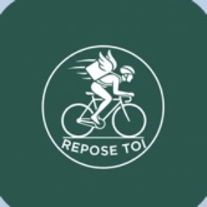

Télécharger Repose Toi
Livraison de repas à Conakry.
Choisis ton téléphone :
Si le téléchargement ne démarre pas tout seul, touche le bouton qui correspond à ton téléphone.

Livraison de repas à Conakry.
Choisis ton téléphone :
Si le téléchargement ne démarre pas tout seul, touche le bouton qui correspond à ton téléphone.